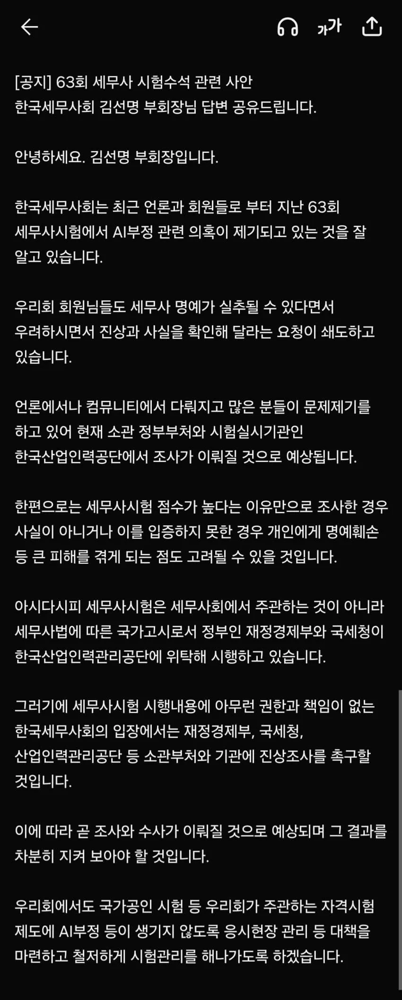

세무사회 입장문
댓글
사례랑 숫자만바꿔서 내보면안되나?ㅋㅋ
그러면 쉬운문제인데
그렇개 할 법적 근거가 있냐 이거지..
너 수상하니까 다시쳐봐! 하는건..
맞넹...
ㅋㅋ 자격증이 공부 한사람과 안한 사람의 변별력 때문에 시험치는건데 ai안경하나 못걸러내면, 걍 좆소사장이 "경리가 ai 안경끼고 세무일 하면되는데 세무사가 왜필요함? "이소리나와도 할말없음 ㅋㅋ

사례랑 숫자만바꿔서 내보면안되나?ㅋㅋ
그러면 쉬운문제인데
그렇개 할 법적 근거가 있냐 이거지..
너 수상하니까 다시쳐봐! 하는건..
맞넹...
ㅋㅋ 자격증이 공부 한사람과 안한 사람의 변별력 때문에 시험치는건데 ai안경하나 못걸러내면, 걍 좆소사장이 "경리가 ai 안경끼고 세무일 하면되는데 세무사가 왜필요함? "이소리나와도 할말없음 ㅋㅋ
무죄추정 ㅇㅇ 이미 검증못함